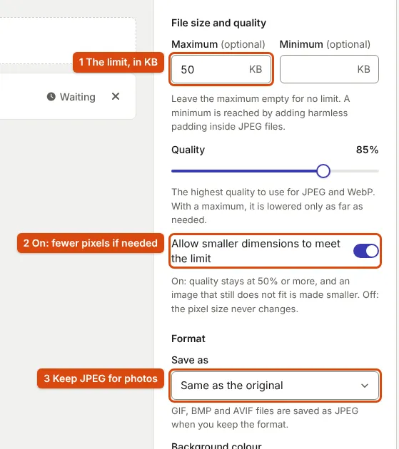
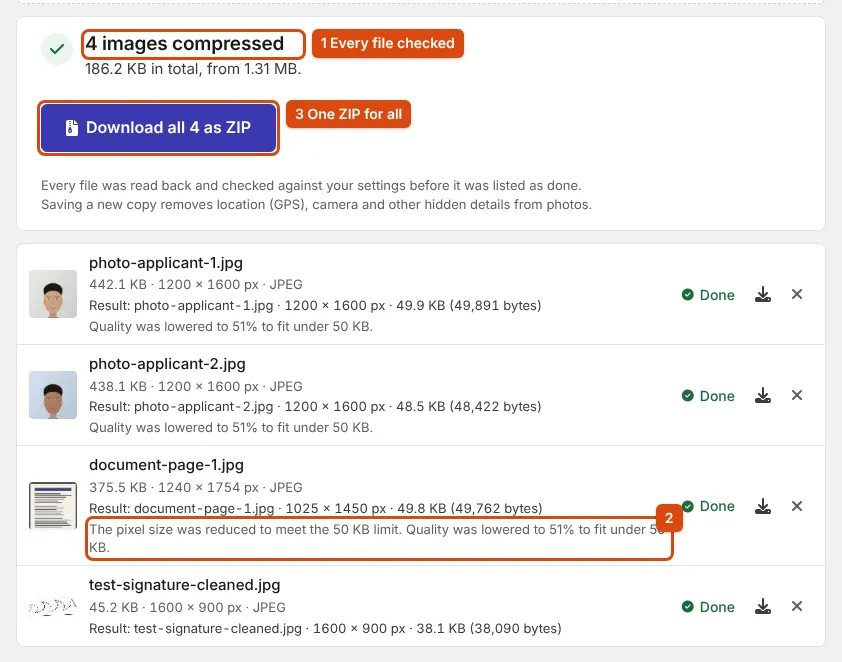

How to Compress an Image to a KB Limit
Set the limit, choose whether the photo may lose pixels to fit, compress, and read the note on each row: it says exactly what was changed.
When to use the compressor
Use the image compressor when a form or an email gives only a file size limit, such as "under 100 KB", and does not fix the pixel size. It works on one image or many at once. When the form also fixes the pixel size, for example 350 × 450 px under 50 KB, use the resizer instead, as resizing a photo for an application shows. For why fewer pixels usually look better than lower quality, see getting a photo under a KB limit without blur.
Before you start
- The limit from the form, in KB, and any minimum.
- The original images: JPG, PNG, WebP, GIF, BMP or AVIF, up to 50 MB each and 500 at a time. Compress from the original each time; every round of JPEG compression loses a little detail.
- The format the form accepts. Photos are far smaller as JPEG than as PNG.
Step 1: Add the images
Open the image compressor. Select Choose images, drag files onto the box, or paste an image. Each image gets a row with its name, size, pixel size and format, and the status Waiting. The bar above the list counts them, for example 4 images · 1.2 MB, with Add images and Clear all.
Step 2: Set the limit
Under File size and quality, type the limit in Maximum. It starts at 100 KB. Fill in Minimum only if the form has one: a JPEG that comes out smaller is padded with harmless extra bytes inside the file to reach it, and the picture does not change. Leave Maximum empty to compress every image at one quality level instead.

Quality is the highest JPEG or WebP quality the compressor will use. With a maximum set, it lowers the quality only as far as the limit requires, so the default of 85% is usually right.
Step 3: Decide whether the pixel size may shrink
The switch Allow smaller dimensions to meet the limit is on by default.
- On: quality never goes below 50%. If an image still does not fit, it is made smaller in pixels until it does. This keeps photos looking clean.
- Off: the pixel size never changes, and quality can go as low as 5%. Use this only when the pixel size itself must not change.
Leave Save as on Same as the original, or choose JPEG (.jpg), accepted everywhere for photos. GIF, BMP and AVIF files are saved as JPEG when you keep the format. More settings holds resizing and file naming options.
Step 4: Compress
Select the button at the bottom of the settings. It names the job, for example Compress 4 images. Each row turns to Processing, then Done. When all are finished, the panel above the list says how many were compressed and the total size before and after, for example 4 images compressed and 184 KB in total, from 1.2 MB.

Step 5: Read the note under each result
Each finished row shows Result: with the name, pixel size and size in KB and exact bytes. Below it, a note appears whenever the compressor had to do more than save at your chosen quality. The notes we saw with the four sample files above, and what they mean:
- Quality was lowered to 51% to fit under 50 KB. The photo kept its pixel size; quality dropped as far as needed. Below 40%, the note adds check that the picture is still clear.
- The pixel size was reduced to meet the 50 KB limit. With the switch on, the scanned page went from 1240 × 1754 to 1036 × 1465 px, and the same row adds that quality was lowered to 52%: the two notes can appear together. Check that small text is still readable.
- No note: the file fitted at the chosen quality, as the small signature image did (38 KB).
Two more notes can appear. If the original was already under the limit and smaller than the new copy, the row says you can upload the original instead. If compressing did not make the file smaller, it says the original was already well compressed.
Step 6: Download
Use the download button on a row for one file, or Download all 4 as ZIP (the number follows your list) for everything in one ZIP file named compressed-images.zip. With a single image the button reads Download the image and saves the image itself, not a ZIP.
What you get
- Images at or under your maximum, each opened again and checked before it was listed as done, with its exact byte count.
- New copies without location (GPS), camera and other hidden details, because each image is saved again.
- Your original files, untouched, still on your device.
If something goes wrong
A row says the image does not fit under the limit
With Allow smaller dimensions off, a large photo may not fit even at the lowest quality. The message says so and suggests turning the switch on or raising the limit.
A PNG stays large
PNG has no quality setting; it can only lose pixels. Choose JPEG under Save as if the form accepts it.
The picture looks blotchy
The quality was pushed too low. Turn Allow smaller dimensions to meet the limit on, or use the image resizer with a smaller pixel size.
"You changed the settings after processing."
Finished files still use the old settings. Select Process again to redo them with the new ones.
Sources
- MDN Web Docs: Image file type and format guide, lossy JPEG and WebP, lossless PNG
- Library of Congress: JPEG Image Encoding Family
- W3C: Portable Network Graphics (PNG) Specification, Third Edition
Every step on this page was followed in the current compressor, and the notes and sizes quoted were produced by it from our synthetic sample images. Found a mistake? Report an error.